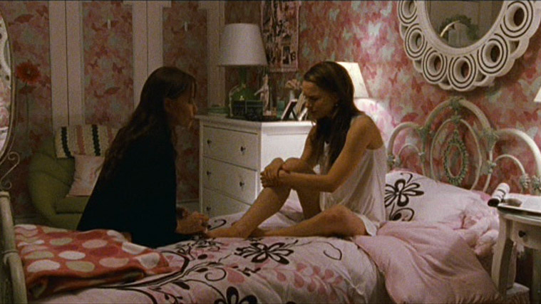

¿Hay rasgos psicóticos en la personalidad de Nina?
por @camilu
El inicio de la película ya nos muestra en sus primeras imágenes el mundo de Nina Sayers. Tras despertar de un sueño en el que interpreta la transformación de la reina Odette en cisne a manos del mago Rothbart, vemos a Nina despertando en una habitación más propia de una niña que de una mujer, rodeada de peluches y de muebles como de una pequeña princesa. Luego vemos aparecer a un personaje importante, Erica Sayers (la siempre magnífica Barbara Hershey), su madre, en su juventud también bailarina, y que a través del avance de la película se nos muestra como una madre sumamente controladora y posesiva con su hija.
De una forma muy parecida al Norman Bates de psicosis, la madre gozante alcanza un status de superyó obsceno vetándole todo acceso al mundo de su propio deseo. Observamos en Nina ciertos comportamientos propios de la retroflexión en las lesiones que se inflinge rascándose con las uñas la espalda, así como también transtornos de alimentación. Excepto la danza y a su madre, Nina no parece tener mucho más en su vida. Como le indica Thomas en un momento en el que Nina le pide que le de el papel:
"Escucha Nina. te aseguro que no me preocupa tu técnica, deberías saberlo [...] La verdad es que cuando te miro sólo veo el Cisne blanco, eres preciosa, temerosa, frágil. El reparto ideal. Pero el Cisne negro, es muy difícil bailar los dos [...] En cuatro años, cada vez que bailas, te he visto obsesionada en que cada paso y movimiento sean correctos, pero nunca te he visto soltarte. ¡Jamás! ¿Tanta disciplina para qué? [...] Nina le responde que ella sólo quiere ser perfecta, a lo que Thomas le responde: La perfección no es sólo cuestión de control. Es también saber soltarse, sorprenderte para así sorprender al público, trascender y eso pocos lo llevan dentro..."

Técnica pero falta de pasión, apolínea pero falta de Dionisos. Disciplinada pero ausencia de espontaneidad. A pesar de eso, finalmente logra el papel y la historia empieza a construirse a partir de este momento.
Observamos también en esas escenas iniciales los primeros síntomas que nos llevan a la sospecha de que algo ocurre con la frágil Nina, se trata del primer encuentro con el doble negro... o, siguiendo la trama de la película: el cisne blanco se cruza con el negro, la frágil Nina con su doble, no tanto como sombra reprimida, sino como imagen especular de aquello sobre lo que no tiene modelo al que referenciarse.